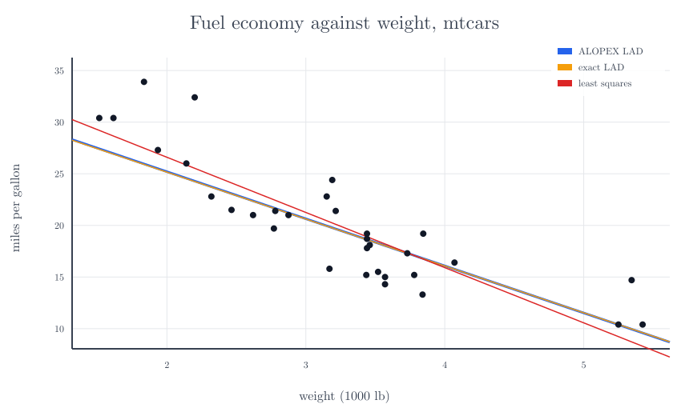
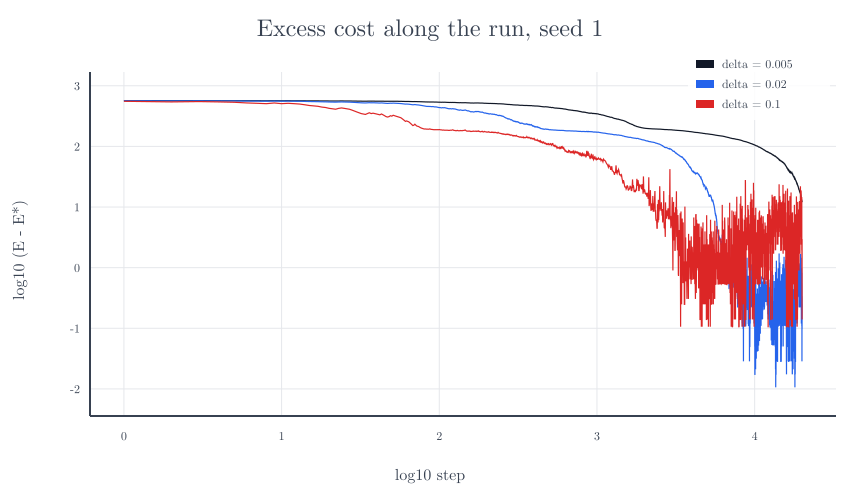
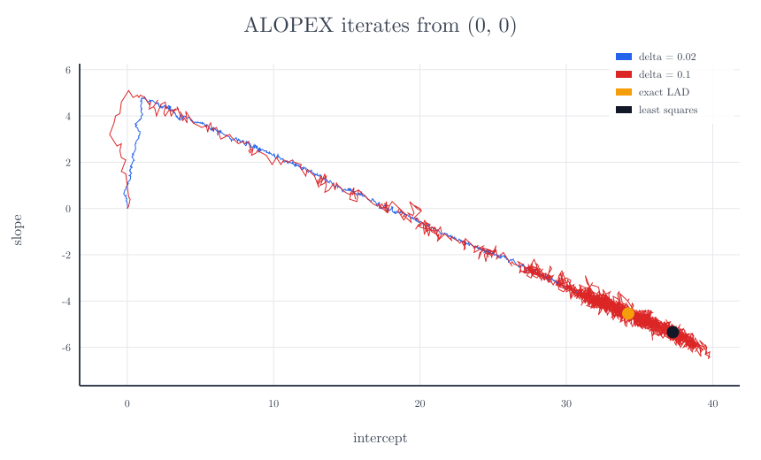

ALOPEX: Gradient-Free Optimization by Correlation
Abstract
ALOPEX (Harth & Tzanakou, 1974) minimises a cost function using only evaluations
of the cost. Every parameter moves by \(\pm\delta\) on every step. The direction
is a biased coin flip, and the bias comes from the correlation between the
parameter's last move and the change in cost that followed. We derive the
expected step. On average ALOPEX does gradient descent: when correlations are
small next to the temperature, the learning rate is \(\delta^3/2T\); when they
are large, it moves by the sign of the gradient. A second, simpler argument
shows that the iterates live on a lattice of spacing \(\delta\), so the step
size, not the run length, fixes the attainable precision. Both results are
checked on a problem without a gradient: a least-absolute-deviation (median)
regression of mpg on wt for the 32 cars in dm::datasets::mtcars(). With
\(\delta=0.02\) and 20 000 evaluations, ALOPEX reaches the best point on its
lattice, 0.007% above the exact optimum found by stats::QuantileRegression.
The measured ratio of correlation to \(\delta^2\times\)gradient is 0.98 and 0.95
for the two coefficients, against a predicted 1.
The data: fuel economy against weight
The 1974 Motor Trend data has fuel consumption (mpg, miles per US gallon)
and weight (wt, in 1000 lb) for 32 cars. Heavier cars use more fuel, but a
handful of light economy cars (the Fiat 128, Honda Civic and Toyota Corolla) get
far more miles per gallon than a straight line through the rest predicts. A
median regression, which minimises absolute rather than squared residuals, is
less swayed by such points.
#include <dm/dm.hpp>
namespace agg = dm::agg;
int main() {
const auto cars = dm::datasets::mtcars();
std::print("{} cars.\n\n{}\n", cars.nrows(),
cars | dm::select({"model", "wt", "mpg"}) |
dm::arrange(dm::desc("mpg")) | dm::slice_head(5) | dm::to_md(3));
std::print("\n{}\n",
cars |
dm::summarise(agg::mean("wt", "mean wt"),
agg::median("wt", "median wt"),
agg::mean("mpg", "mean mpg"),
agg::median("mpg", "median mpg"),
agg::sd("mpg", "sd mpg")) | dm::to_md(3));
}32 cars.
| model | wt | mpg |
|---|---|---|
| Toyota Corolla | 1.835 | 33.9 |
| Fiat 128 | 2.200 | 32.4 |
| Honda Civic | 1.615 | 30.4 |
| Lotus Europa | 1.513 | 30.4 |
| Fiat X1-9 | 1.935 | 27.3 |
| mean wt | median wt | mean mpg | median mpg | sd mpg |
|---|---|---|---|---|
| 3.217 | 3.325 | 20.091 | 19.2 | 6.027 |
The method
The correlation rule
Let \(E(w)\) be a cost over parameters \(w\in\mathbb{R}^d\). ALOPEX keeps the previous move \(\Delta w(n-1)\) and the cost change it caused, \(\Delta E(n-1)=E(w(n-1))-E(w(n-2))\). For each parameter it forms the correlation
and then moves every parameter at once:
If raising \(w_i\) last time raised the cost, then \(C_i>0\), \(p_i<\tfrac12\),
and a decrease becomes more likely. If it lowered the cost, \(C_i<0\) and the
move tends to be repeated. The temperature \(T\) sets how much the correlation
matters. With temperature <= 0 datamunge sets \(T\) at each step to the mean
of \(|C_i|\), which keeps \(C_i/T\) of order one whatever the scale of the cost.
In that mode cooling is not used.
ALOPEX(E, w, delta, T):
dw = 0; dE = 0; E_old = E(w)
repeat n times:
for each i:
C_i = dw_i * dE
dw_i = (uniform() < 1 / (1 + exp(C_i / T))) ? +delta : -delta
w = w + dw
E_new = E(w); dE = E_new - E_old; E_old = E_new
keep the best w seen; cool TOne step costs one evaluation of \(E\), whatever \(d\) is. Finite-difference gradient descent needs \(d+1\).
The drift law: ALOPEX is gradient descent on average
Condition on the current correlation. The expected move is
Now relate \(C_i\) to the gradient \(g=\nabla E\). For a small step, \(\Delta E\approx\sum_j g_j\,\Delta w_j\), so
The first term is exact because \(\Delta w_i^2=\delta^2\) always. Each cross term is a product of two \(\pm\delta\) signs. Nearly independent fair coins make it average to zero, so
This is a central-difference estimate of the gradient, computed one coordinate at a time but paid for with one evaluation for all coordinates. The cross terms are the price: they add noise with variance \(\delta^4\sum_{j\ne i}g_j^2\), which grows with \(d\). Substituting into the drift gives two regimes:
The derivation uses only \(\Delta E\). Where \(E\) has kinks it still holds with \(g\) any subgradient, because the cost is never differentiated.
The lattice: why the step size sets the precision
Every coordinate moves by exactly \(\pm\delta\) on every step. After \(n\) steps from \(w(0)\),
So the iterates never leave the lattice \(w(0)+\delta\mathbb{Z}^d\). Moreover, all the \(k_i\) share one parity, so only half of the lattice is ever reachable. However long the run, the best ALOPEX can return is
For a cost that is Lipschitz near its minimiser, \(E^\star_\delta-E^\star=O(\delta)\). A smaller \(\delta\) buys precision, but the drift law says each step covers at most \(\delta\), so the walk takes at least \(\|w^\star-w(0)\|_\infty/\delta\) steps to arrive. Precision and speed trade off through the single number \(\delta\).
Median regression without a gradient
The least-absolute-deviation fit of \(\text{mpg}=\beta_0+\beta_1\,\text{wt}\) minimises
\(E\) is convex and piecewise linear. Its gradient jumps whenever the line
passes through a data point, and its minimum is at a corner. This is the
\(\tau=\tfrac12\) case of quantile regression, which stats::QuantileRegression
solves exactly with a simplex. That gives a reference point. ALOPEX starts at
\(\beta=(0,0)\) with \(\delta=0.02\), automatic temperature and 20 000 steps.
Ordinary least squares (stats::LM) is shown for contrast.
#include <dm/dm.hpp>
int main() {
std::filesystem::create_directories("build");
const dm::dstruct::DataFrame cars = dm::datasets::mtcars();
const auto wt = cars.get_column<double>("wt").values();
const auto mpg = cars.get_column<double>("mpg").values();
auto lad = [&](const std::vector<double> & b) {
double s = 0;
for (std::size_t i = 0; i < wt.size(); ++i)
s += std::fabs(mpg[i] - b[0] - b[1] * wt[i]);
return s;
};
dm::algorithms::AlopexParameters p;
p.step = 0.02;
p.temperature = 0.0;
p.iterations = 20000;
p.seed = 1;
const auto run = dm::algorithms::alopex_minimize(lad, 2, {0.0, 0.0}, p);
const dm::stats::QuantileRegression qr(dm::formula("mpg ~ wt"), cars);
const dm::stats::LM ols(dm::formula("mpg ~ wt"), cars);
const auto &bq = qr.coefficients();
const auto &bo = ols.coefficients();
const auto &ba = run.best_parameters;
std::print("| method | intercept | slope | sum abs residual | cost evaluations |\n" "| :--- | ---: | ---: | ---: | ---: |\n");
std::print("| ALOPEX (delta = 0.02) | {:.3f} | {:.3f} | {:.4f} | {} |\n",
ba[0], ba[1], run.best_cost, p.iterations + 1);
std::print("| QuantileRegression, tau = 0.5 | {:.3f} | {:.3f} | {:.4f} | n/a |\n",
bq[0], bq[1], lad(bq));
std::print("| LM (least squares) | {:.3f} | {:.3f} | {:.4f} | n/a |\n",
bo[0], bo[1], lad(bo));
std::print("\nALOPEX ends {:.4f} ({:.4f}%) above the exact LAD optimum, starting from cost {:.1f}.\n",
run.best_cost - lad(bq),
100 * (run.best_cost - lad(bq)) / lad(bq), run.initial_cost);
dm::graphics::RPlot::create().points(wt, mpg, "cars", dm::RGB{17, 24, 39},
4.0).abline(ba[0], ba[1],
dm::RGB{37, 99, 235}, 3.0).abline(bq[0], bq[1], dm::RGB{245, 158, 11}, 1.5).abline(bo[0], bo[1], dm::RGB{220, 38, 38}, 1.5).legend({"ALOPEX LAD", "exact LAD", "least squares"}, {dm::RGB{37, 99, 235}, dm::RGB{245, 158, 11}, dm::RGB{220, 38, 38}}).title("Fuel economy against weight, mtcars").x_label("weight (1000 lb)").y_label("miles per gallon").size(860, 520).save_svg("build/alopex_fit.svg");
}| method | intercept | slope | sum abs residual | cost evaluations |
|---|---|---|---|---|
| ALOPEX (delta = 0.02) | 34.320 | -4.560 | 74.2947 | 20001 |
| QuantileRegression, tau = 0.5 | 34.232 | -4.539 | 74.2893 | n/a |
| LM (least squares) | 37.285 | -5.344 | 74.9005 | n/a |
ALOPEX ends 0.0054 (0.0072%) above the exact LAD optimum, starting from cost 642.9.

The two LAD lines agree to within one lattice step in each coefficient. They are flatter than least squares, which lets the light, high-mpg cars pull its line up and so raises its slope magnitude by about 0.8 mpg per 1000 lb. Each fit is optimal for its own loss: least squares has the larger sum of absolute residuals here.
Checking the theory
The lattice limits precision
For several step sizes the next block runs ALOPEX for 20 000 steps from three seeds. It then searches the reachable half-lattice by brute force for \(E^\star_\delta\), using the square \(30\le\beta_0\le38\), \(-6\le\beta_1\le-3\), which contains the optimum. It also records the first step at which the cost came within 1% of the exact optimum.
#include <dm/dm.hpp>
int main() {
std::filesystem::create_directories("build");
const dm::dstruct::DataFrame cars = dm::datasets::mtcars();
const auto wt = cars.get_column<double>("wt").values();
const auto mpg = cars.get_column<double>("mpg").values();
auto lad = [&](const std::vector<double> & b) {
double s = 0;
for (std::size_t i = 0; i < wt.size(); ++i)
s += std::fabs(mpg[i] - b[0] - b[1] * wt[i]);
return s;
};
const double best =
lad(dm::stats::QuantileRegression(dm::formula("mpg ~ wt"), cars).coefficients());
std::print("| delta | lattice optimum E*_delta | ALOPEX best (3 seeds) | steps to within 1% (3 seeds) |\n" "| ---: | ---: | :--- | :--- |\n");
auto plot = dm::graphics::RPlot::create();
const std::vector<std::pair<double, dm::RGB>> shown = {
{0.005, dm::RGB{17, 24, 39}}, {0.02, dm::RGB{37, 99, 235}},
{0.1, dm::RGB{220, 38, 38}}
};
for (double delta : {0.005, 0.01, 0.02, 0.05, 0.1}) {
double lattice = 1e300; // brute force over k with k0 = k1 (mod 2)
for (long a = std::lround(30 / delta); a <= std::lround(38 / delta); ++a)
for (long b =
std::lround(-6 / delta); b <= std::lround(-3 / delta); ++b)
if ((a - b) % 2 == 0)
lattice = std::min(lattice, lad({a * delta, b * delta}));
std::string bests, hits;
for (std::uint64_t seed : {1, 2, 3}) {
dm::algorithms::AlopexParameters p;
p.step = delta;
p.temperature = 0.0;
p.iterations = 20000;
p.seed = seed;
const auto run =
dm::algorithms::alopex_minimize(lad, 2, {0.0, 0.0}, p);
const auto &h = run.cost_history;
const auto it = std::ranges::find_if(h, [&](double c) {
return c < 1.01 * best;
});
bests +=
std::format("{}{:.4f}", seed > 1 ? ", " : "", run.best_cost);
hits +=
std::format("{}{}", seed > 1 ? ", " : "",
it == h.end() ? std::string("never")
: std::to_string(it - h.begin() + 1));
if (seed == 1)
for (const auto & [d, colour] : shown)
if (d == delta) {
std::vector<double> x, y;
for (std::size_t n = 0; n < h.size(); n += (n < 1000 ? 1 : 10)) {
x.push_back(std::log10(n + 1.0));
y.push_back(std::log10(h[n] - best));
}
plot.lines(x, y, std::format("delta = {}", delta), colour, 1.2);
}
}
std::print("| {} | {:.4f} | {} | {} |\n", delta, lattice, bests, hits);
}
std::print("\nExact optimum (QuantileRegression): {:.4f}.\n", best);
plot.title("Excess cost along the run, seed 1").x_label("log10 step").y_label("log10 (E - E*)").size(860, 500).save_svg("build/alopex_convergence.svg");
}| delta | lattice optimum E*_delta | ALOPEX best (3 seeds) | steps to within 1% (3 seeds) |
|---|---|---|---|
| 0.005 | 74.2908 | 86.2653, 78.6371, 77.7486 | never, never, never |
| 0.01 | 74.2947 | 74.5101, 74.2947, 74.2947 | 12538, 14612, 11824 |
| 0.02 | 74.2947 | 74.2947, 74.2947, 74.2947 | 6743, 8721, 6717 |
| 0.05 | 74.3052 | 74.3052, 74.3052, 74.3052 | 3691, 3577, 4589 |
| 0.1 | 74.3656 | 74.3656, 74.3656, 74.3656 | 3046, 2780, 2214 |
Exact optimum (QuantileRegression): 74.2893.

For \(\delta\ge0.02\) all three seeds return exactly the lattice optimum, and at \(\delta=0.01\) two of the three do. Different random walks find the same corner of the same lattice, so the remaining error is set by \(\delta\), as derived. The excess \(E^\star_\delta-E^\star\) falls from 0.076 at \(\delta=0.1\) to 0.016 at \(0.05\) and 0.005 at \(0.02\) and \(0.01\). (At \(0.01\) the coarser optimum happens to lie on the finer lattice too.) The cost of precision is travel time. With \(\delta=0.005\) the walk needs at least \(34.2/0.005\approx6800\) steps just to reach the optimal intercept. None of its seeds came within 1% of the optimum in 20 000 steps; their best costs were 78–86. Coming within 1% took about 2 200–3 000 steps at \(\delta=0.1\), 6 700–8 700 at \(0.02\) and 11 800–14 600 at \(0.01\).
The figure also shows that the current iterate never settles. The temperature
tracks \(|C|\), so near the minimum the coin flips stay informative but never
become certain, and the walk wanders over a band of lattice points around the
optimum. That is why alopex_minimize returns the best point seen, not the last
one.
The path through parameter space
#include <dm/dm.hpp>
int main() {
std::filesystem::create_directories("build");
const dm::dstruct::DataFrame cars = dm::datasets::mtcars();
const auto wt = cars.get_column<double>("wt").values();
const auto mpg = cars.get_column<double>("mpg").values();
auto lad = [&](const std::vector<double> & b) {
double s = 0;
for (std::size_t i = 0; i < wt.size(); ++i)
s += std::fabs(mpg[i] - b[0] - b[1] * wt[i]);
return s;
};
const auto bq =
dm::stats::QuantileRegression(dm::formula("mpg ~ wt"), cars).coefficients();
const auto bo = dm::stats::LM(dm::formula("mpg ~ wt"), cars).coefficients();
auto plot = dm::graphics::RPlot::create();
std::print("| delta | turning step | intercept there | slope there | final b0 + 3.325 b1 |\n" "| ---: | ---: | ---: | ---: | ---: |\n");
for (auto[delta, colour] : std::vector<std::pair<double, dm::RGB>>{
{0.02, dm::RGB{37, 99, 235}}, {0.1, dm::RGB{220, 38, 38}}
}) {
dm::algorithms::AlopexParameters p;
p.step = delta;
p.temperature = 0.0;
p.iterations = 20000;
p.seed = 1;
p.record_path = true;
const auto run = dm::algorithms::alopex_minimize(lad, 2, {0.0, 0.0}, p);
std::vector<double> b0{0.0}, b1{0.0};
std::size_t turn = 0; // step where the slope peaks
for (std::size_t n = 0; n < run.parameter_history.size(); n += 5) {
b0.push_back(run.parameter_history[n][0]);
b1.push_back(run.parameter_history[n][1]);
}
plot.lines(b0, b1, std::format("delta = {}", delta), colour, 1.0);
for (std::size_t n = 0; n < run.parameter_history.size(); ++n)
if (run.parameter_history[n][1] > run.parameter_history[turn][1])
turn = n;
const auto &w = run.parameter_history[turn];
const auto &b = run.best_parameters;
std::print("| {} | {} | {:.2f} | {:.2f} | {:.2f} |\n", delta, turn + 1,
w[0], w[1], b[0] + 3.325 * b[1]);
}
plot.points({bq[0]}, {bq[1]}, "exact LAD", dm::RGB{245, 158, 11}, 7.0).points({bo[0]}, {bo[1]}, "least squares", dm::RGB{17, 24, 39}, 7.0).title("ALOPEX iterates from (0, 0)").x_label("intercept").y_label("slope").size(860, 520).save_svg("build/alopex_paths.svg");
}| delta | turning step | intercept there | slope there | final b0 + 3.325 b1 |
|---|---|---|---|---|
| 0.02 | 530 | 1.20 | 4.84 | 19.16 |
| 0.1 | 82 | 0.20 | 5.20 | 19.24 |

The first leg shows the cross-term noise from the drift law. At \(\beta=(0,0)\) every residual is positive, so \(g=-(32,\ \sum_k\text{wt}_k)=-(32,\ 102.95)\), and both coefficients should rise. But a joint move changes \(E\) by about \(-32\Delta\beta_0-103\Delta\beta_1\), so the sign of \(\Delta E\), and with it the sign of both correlations, is set almost entirely by \(\Delta\beta_1\). \(C_1\) is informative and the slope climbs steadily. \(C_0\) is mostly the cross term \(g_1\Delta\beta_0\Delta\beta_1\), which is as likely to be positive as negative, so the intercept barely moves. In the \(\delta=0.02\) run the slope climbs to 4.84 by step 530, while the intercept has reached only 1.20.
By then the line \(\text{mpg}=1.2+4.84\,\text{wt}\) cuts through the middle of
the data, with the light cars above the line and the heavy ones below, and the
slope's subgradient changes sign. From there the walk follows the valley floor.
Along it the fitted line keeps passing near the centre of the cloud: at the end,
\(\beta_0+3.325\,\beta_1\), the fit at the median weight, is 19.16 and 19.24 for
the two runs, against a median mpg of 19.2. The valley is long and narrow
because the weights do not straddle zero (they run from 1.5 to 5.4). Many lines
through the centre of the cloud fit almost equally well, and only the tilt has
to be found.
The drift law in the data
The decisive prediction is \(\mathbb{E}[C_i]\approx\delta^2 g_i\). The
alopex_correlations helper rebuilds every \(C_i(n)\) from a recorded run. The
LAD subgradient \(g\) at \(w(n-2)\), the point where the move behind \(C_i(n)\)
was made, has a closed form: \(g_0=-\sum_k\operatorname{sign}(r_k)\) and
\(g_1=-\sum_k\operatorname{sign}(r_k)\,\text{wt}_k\). We compare the two over
the whole run and over its first 2 000 steps, the descent phase.
#include <dm/dm.hpp>
int main() {
const dm::dstruct::DataFrame cars = dm::datasets::mtcars();
const auto wt = cars.get_column<double>("wt").values();
const auto mpg = cars.get_column<double>("mpg").values();
auto lad = [&](const std::vector<double> & b) {
double s = 0;
for (std::size_t i = 0; i < wt.size(); ++i)
s += std::fabs(mpg[i] - b[0] - b[1] * wt[i]);
return s;
};
auto subgradient = [&](const std::vector<double> & b) {
std::vector<double> g{0.0, 0.0};
for (std::size_t i = 0; i < wt.size(); ++i) {
const double r = mpg[i] - b[0] - b[1] * wt[i];
const double s = (r > 0) - (r < 0);
g[0] -= s;
g[1] -= s * wt[i];
}
return g;
};
const double delta = 0.02;
const std::vector<double> init{0.0, 0.0};
dm::algorithms::AlopexParameters p;
p.step = delta;
p.temperature = 0.0;
p.iterations = 20000;
p.seed = 1;
p.record_path = true;
const auto run = dm::algorithms::alopex_minimize(lad, 2, init, p);
const auto C = dm::algorithms::alopex_correlations(run, init);
std::print("| steps | coefficient | mean C | mean delta^2 g | ratio | sign agreement |\n" "| :--- | :--- | ---: | ---: | ---: | ---: |\n");
for (auto[lo, hi] : std::vector<std::pair<std::size_t, std::size_t>>{
{2, 2000}, {2, 20000}
})
for (std::size_t i = 0; i < 2; ++i) {
double sc = 0, sg = 0;
std::size_t agree = 0, nonzero = 0;
for (std::size_t n = lo; n < hi; ++n) {
const double g =
delta * delta * subgradient(run.parameter_history[n - 2])[i];
sc += C[n][i];
sg += g;
if (C[n][i] != 0 && g != 0) {
++nonzero;
agree += (C[n][i] > 0) == (g > 0);
}
}
std::print("| {}-{} | {} | {:.3e} | {:.3e} | {:.3f} | {:.1f}% |\n", lo, hi,
i == 0 ? "intercept" : "slope", sc / (hi - lo), sg / (hi - lo),
sc / sg, 100.0 * agree / nonzero);
}
}| steps | coefficient | mean C | mean delta^2 g | ratio | sign agreement |
|---|---|---|---|---|---|
| 2-2000 | intercept | -5.308e-03 | -4.497e-03 | 1.180 | 80.3% |
| 2-2000 | slope | -7.585e-03 | -7.336e-03 | 1.034 | 71.1% |
| 2-20000 | intercept | -9.709e-04 | -9.952e-04 | 0.976 | 59.6% |
| 2-20000 | slope | -6.153e-04 | -6.456e-04 | 0.953 | 80.5% |
Over the full run the ratio of mean correlation to mean \(\delta^2 g\) is close to the predicted 1 for both coefficients. In the descent phase it is somewhat above 1 for the intercept. There, consecutive moves are not independent coins: the walk is pushing hard in one direction, so the cross terms \(\Delta w_0\Delta w_1\) have a non-zero mean. The sign-agreement column shows how noisy any single correlation is. A single \(C_i\) has the same sign as the subgradient only 60–80% of the time, and for the intercept over the full run the figure is 60%. The drift emerges from averaging many steps, which is one reason ALOPEX needs thousands of evaluations for a two-parameter problem.
Summary
- ALOPEX moves every parameter by \(\pm\delta\) on every step, choosing the sign by a logistic coin whose bias is the correlation \(C_i=\Delta w_i\Delta E\). The expected move is \(-\delta\tanh(C_i/2T)\).
- Since \(\mathbb{E}[C_i]\approx\delta^2\partial E/\partial w_i\), the method is stochastic gradient descent, with rate \(\delta^3/2T\) for small correlations and sign-gradient steps for large ones. It never differentiates \(E\), so kinks do not matter. One evaluation drives all \(d\) coordinates, at the cost of cross-term noise that grows with \(d\).
- The iterates live on the half-lattice \(w(0)+\delta\mathbb{Z}^d\) with equal parities, so \(\delta\) fixes the precision and longer runs cannot beat \(E^\star_\delta\). On the mtcars median regression, 11 of the 12 runs with \(\delta\ge0.01\) returned \(E^\star_\delta\) exactly.
- With \(\delta=0.02\), ALOPEX matched the exact
QuantileRegressionLAD fit to within 0.007% in 20 000 evaluations. That is accurate, but far slower than a method that exploits the problem's structure. ALOPEX is for black boxes, not for problems with a known convex form.
#include <dm/dm.hpp>
dm::algorithms::AlopexParameters p;
p.step = 0.02; // lattice spacing: sets precision and speed
p.temperature = 0.0; // auto: T = mean |C| at each step
p.iterations = 20000;
p.record_path = true; // keep iterates for alopex_correlations()
auto run = dm::algorithms::alopex_minimize(cost, dim, start, p);
// run.best_parameters, run.best_cost, run.cost_history, run.temperature_history